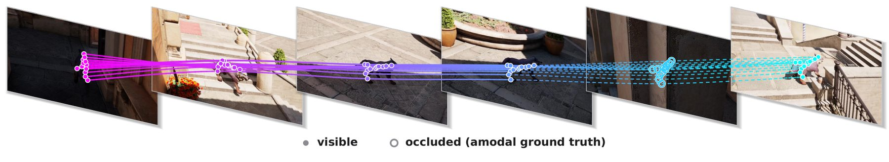

Overview
One traversal, many observations.
A camera walks a route through an artist-built Unreal Engine world. Every annotation falls out of the render itself — nothing is labelled by hand.

Overview
A camera walks a route through an artist-built Unreal Engine world. Every annotation falls out of the render itself — nothing is labelled by hand.
Viewpoints
An eye-height camera rides the trajectory. Image, pose and action agree by construction.
A character replays the path while the camera follows independently — ground truth for both.
Equirectangular 4096×2048, stitched from six cube faces in linear light. No FOV baked in.
Modalities

Appearance
Lighting is simulated at render time, so re-rendering a moment changes the image physically — not by recolouring.
 Day
Day

Diversity
Scenes × states × viewpoints × characters × routes — quality stays artist-built, quantity comes from the product.


Applications
Exact camera conditioning and a recorded action stream.
Flow and tracks over a deforming subject, camera moving freely.
White model paired frame-for-frame with the finished image.
Citation
@article{worldrover2026,
title = {WorldRover: A Scalable Synthetic Video Data Engine
for World Exploration with Rich Annotations},
author = {Xu, Xiaojie and Lin, Zhengyuan and Li, Runyi and
Liu, Yihao and Zhang, Kaipeng and Ge, Yongtao},
journal = {arXiv preprint},
year = {2026}
}